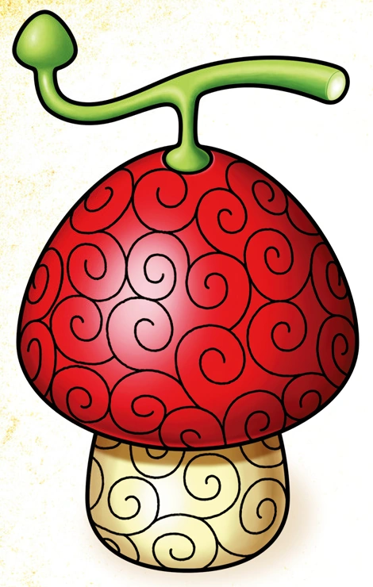

Frutas do Diabo
Gomu Gomu no Mi

A Gomu Gomu no Mi é uma Akuma no Mi que permite ao usuário esticar o corpo como borracha, tornando-se um Homem-Borracha.
Hito Hito no Mi
A Hito Hito no Mi é uma Akuma no Mi que permite ao usuário se transformar em humano, tornando-se um humano.
Hana Hana no Mi
A Hana Hana no Mi é uma Akuma no Mi que permite ao usuário brotar partes do corpo em superfícies, tornando-se um Homem-Flor.
Yomi Yomi no Mi

A Yomi Yomi no Mi é uma Akuma no Mi que concede ao usuário uma segunda vida após a morte.